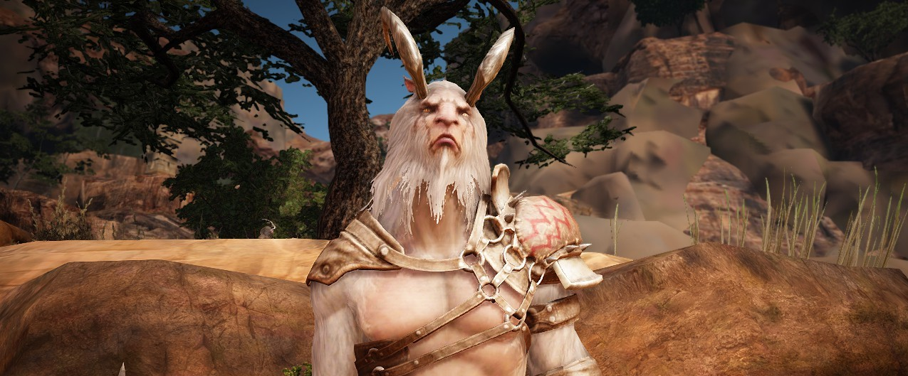

Charte de la guilde
Bienvenue si vous venez d'arriver!
Ceci est notre charte, elle est faite en cours de route et sera peut-être améliorée mais j'aimerais qu'elle soit acceptée et signée par tous.
Pour que les Esprits Libres continuent de prospérer, nous devons avoir un code de conduite.
- Enregistrez-vous sur le discord : Que vous participiez au canal audio ou non, le discord fourni de nombreuses informations BDO et sur les évènements de guilde. Au minimum, nous demandons une lecture/signature de charte et une petite présentation rapide sur le channel discord prévu.
- Identification sur discord : votre pseudo doit être changé/complété en mettant en avant votre nom de famille InGame. (uniquement pour notre serveur)
- Les salaires sont fixés à 999 999 par jour avec valorisation à l’activité de guilde : participer aux Quêtes De Guilde, quelque soit le type augmentera votre salaire. QDG Petite: 1 personne ou plus . QDG moyenne et plus : 2 à 3 minimum (sauf quêtes en mer)
- Les quêtes demandées et acceptées : Elles devront être terminées par le demandeur (sauf cas de force majeur).
- Demande de quête de Guilde : À formuler auprès des Officiers présents en jeu. Faites votre demande en discussion de guilde ingame ou discord en précisant votre serveur. N'hésitez en aucun cas à le faire, c'est leur rôle.
- Respectez leurs disponibilités (ils ne pourront pas forcément changer de serveur sur le moment). Par soucis de simplicité, vous pouvez commencer votre recherche de QDG sur le serveur courant de la guilde avant de permuter vers un autre canal. Il est important de rappeler que participer à une quête de guilde rapporte un salaire de quête.
- Un bonus de guilde est versé chaque début de mois en fonction de la somme gagnée le mois précédent. Cette somme est divisée en parts qui vous sont versées selon votre activité de guilde (une petite partie sera gardée en fonds de guilde pour la prospérité)
- Player Killing et déclaration de Guerre de Guilde : Les deux formes sont acceptées sous ces conditions: Défense de spot occupé par vous-même ou des membres de la guilde, secours d'un ou plusieurs membres de la guilde et/ou rendre la pareille aux relous qui s'acharnent.
- Ce qui n'est pas accepté : le griefing sur zone occupée par un autre joueur, le karma bombing, l'acharnement inutile, même en guerre, sur un/des joueurs qui fuient, ont abandonné le spot ou dont la déclaration de guerre a été retirée, même si les conditions de permission sont remplies, être TOXIQUE! Oui, tout le monde peut rigoler mais il y a des limites à tout, provoquer verbalement ou par les actes, c'est être toxique.
N'oubliez pas que vous représentez la guilde à chaque instant auprès des joueurs qui ne la connaissent pas!
Votre comportement fait notre réputation